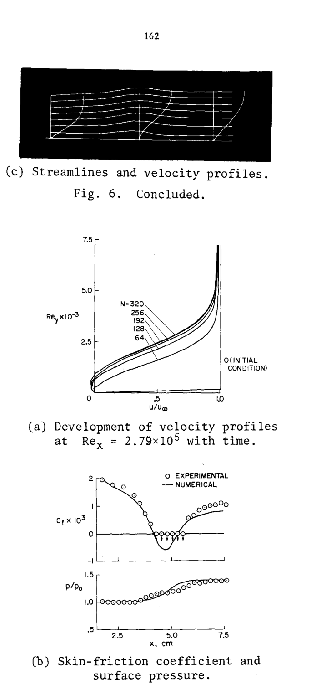
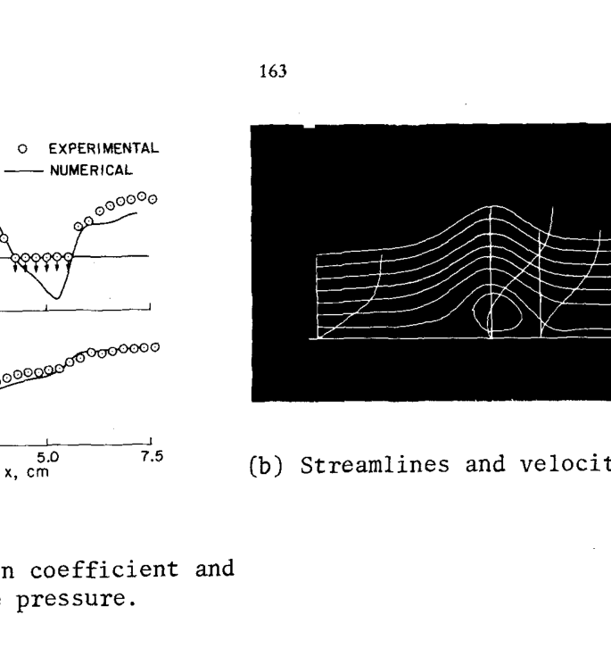
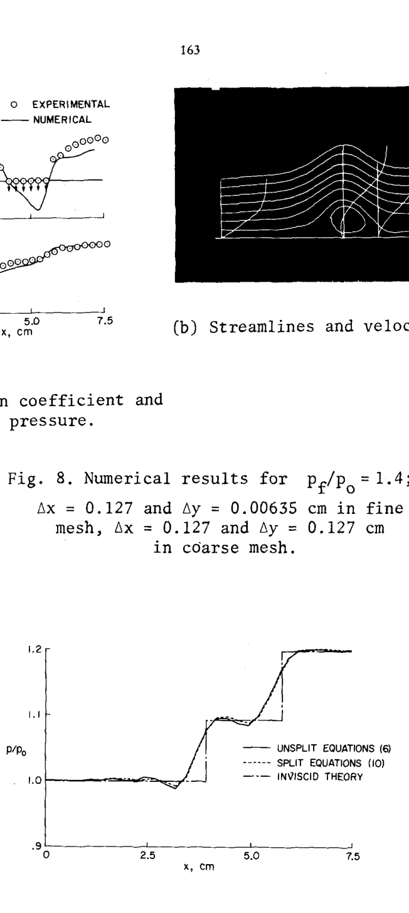

01中文摘要
考察用于求解激波与层流边界层干扰的高效二阶Lax-Wendroff差分格式的数值行为，并针对该问题修改格式。讨论数值依赖域、CFL条件、线性稳定性与非线性不稳定性，指出原始格式在某些速度方向可能不稳定，提出四种变体循环使用的分裂技术以放宽时间步限制。将改进格式用于二维时间相关Navier-Stokes方程，计算平板入射激波干扰，给出压力、摩阻、流线和速度剖面，并与实验比较。
02阅读说明
conferencePaper（1971），13页；bundle 723行已全读。正文为数值方法论文，含稳定性分析、网格设计、分裂格式与两个M=2激波/层流边界层干扰算例；无表格。公式OCR严重乱码，已用PDF第1–3、5–7页核对式(1)–(11)；图6–9有裁剪图，图2–5未在bundle图件清单中，只能依据正文描述。实验对比数据来自Hakkinen等(1959)，本文未重复实验。 文章类型：会议
03一句话核心与三句话摘要
M=2斜激波/层流边界层干扰的MacCormack二阶分裂格式数值模拟与网格设计准则。
- 当时对Lax-Wendroff类二阶格式在激波/边界层干扰中的精度、稳定性与网格配置缺乏系统检验，本文针对该问题改造MacCormack格式。 AI概括
- 采用二维非定常Navier-Stokes方程、两步二阶格式、线性von Neumann稳定性分析、网格雷诺数Re_Δy=2的网格估计和交替方向分裂，计算M=2、Pf/Po=1.2与1.4两个工况并与Hakkinen实验对比；粗网格摩阻严重偏离，细化后压力/摩阻总体吻合，但分离区长度与压力平台仍预测不足。 AI概括
- 分裂格式保持二阶精度，计算总时间约为未分裂格式的0.75；但非线性收敛无理论保证，分离区预测仍受网格分辨率限制。 AI概括
04核心内容清单
| 要点 | 类型 | 重要性 | 原文依据 | 属性 |
|---|---|---|---|---|
| 研究目的是检验高效二阶Lax-Wendroff/MacCormack格式在激波/层流边界层干扰中的数值行为，并通过分裂改造适应边界层法向小尺度。 | 研究目的 | A | p.151，Introduction | 原文明确 |
| 二维非定常Navier-Stokes方程写成守恒向量形式，包含正应力、剪应力与热传导项（式1）。 | 控制方程 | B | p.151，式(1) | 原文明确 |
| 两步格式先用前向差分预测、再用后向差分校正，达到二阶精度（式2）。 | 数值格式 | A | p.151，式(2) | 原文明确 |
| 数值依赖域必须包含物理依赖域，且不宜远大于物理依赖域；由主依赖域得到CFL条件（式3）。 | 稳定性条件 | A | p.152，式(3) | 原文明确 |
| 线性化分析表明式(2)二阶精度；CFL是四变体循环格式（式6）稳定的充分条件，而式(2)在速度方向3π/4与7π/4处特征值可大于1。 | 稳定性结论 | A | p.153–154，式(4)(5)(6)，图2 | 原文明确 |
| 非线性不稳定案例(d)：相邻两单元都成为动量接收者，差分方程因速度平方丢失符号而自加剧；用面速度二阶平均((u_i^n+u_{i+1}^{n+1})/2)替代可保持精度并抑制失稳。 | 非线性不稳定 | B | p.154–155 | 原文明确 |
| 令对流项与黏性项差分系数同量级，得到网格雷诺数Re_Δy=ρvΔy/μ=2，并导出Δy与Δx的估计式(8)(9)。 | 网格设计 | A | p.155，式(8)(9) | 原文明确 |
| 直接二维分裂LxLy只有一阶精度，采用LyLxLxLy可恢复二阶；大M时用M个子步与冻结∂F/∂x的Lxy算子（式11）。 | 分裂算法 | A | p.156–157，式(10)(11) | 原文明确 |
| 未分离工况：34×12粗网格摩阻与实验明显不符，解本质为无黏流；34×32嵌套网格（细网格Δy=0.00685 cm）256个Δt_x后压力与摩阻总体吻合。 | 算例结果 | A | p.158，图4、图6 | 原文明确 |
| 分离工况：分离点与实验一致，但分离区长度被低估、实验压力平台未出现；作者归因于分离区仅4个网格且Δx超过式(9)估计10倍以上。 | 算例结果 | A | p.159，图7 | 原文明确 |
| Δx减半为38×32、Δt_x减半、M=10后结果改善，但作者仍认为需按式(8)(9)量级继续加密才能消除压力平台差异。 | 网格敏感性 | A | p.159，图8、Concluding Remarks | 原文明确 |
| 分裂与未分裂格式稳态压力剖面几乎重合；Δt_x/Δt=1.45、单步时间比0.924，总计算时间为0.75倍。 | 效率评估 | A | p.159，图9 | 原文明确 |
05引言：研究问题与领域缺口
【原文明确】问题：有限差分求解流体动力学时，精度取决于格式相容性、数值稳定性、数值与物理依赖域匹配以及对所有物理过程的模拟，但这些问题的答案很少（p.151）。缺口：需要检验一种高效二阶Lax-Wendroff/MacCormack格式的数值行为，并针对激波与层流边界层干扰的法向小尺度进行改造（p.151）。目标：分析该格式的稳定性与精度，提出网格间距估计和分裂算法，并用M=2斜激波/平板层流边界层干扰算例验证（p.151、157）。
06流动条件与几何构型
| 项目 | 数值/描述 | 依据 | 备注 |
|---|---|---|---|
| 来流马赫数M∞ | 2.0 | p.157，Numerical Results | |
| 介质与物性 | 空气；Sutherland黏性律；完全气体状态方程；常数Prandtl数0.72 | p.158 | |
| 壁面热条件 | 绝热壁（由密度与温度镜像边界实现） | p.158 | |
| 几何与计算域 | 平板；矩形域8.636 cm×1.270 cm，其中平板长7.874 cm；二维 | p.157 | |
| 边界层状态 | 层流（Hakkinen实验在整个干扰区为层流） | p.157 | |
| 工况1（未分离） | Pf/Po=1.2；xs=4.88 cm；Re_xs=2.84×10^5 | p.158 | |
| 工况1初始粗网格 | 34×12单元；Δx=0.254 cm；Δy=0.127 cm；Δt取0.9倍最大值；128步；IBM 360/67约5 min | p.158 | |
| 工况1嵌套网格 | 总体34×32；细网格34×22，Δx=0.254 cm、Δy=0.00685 cm；粗网格Δx=0.254 cm、Δy=0.127 cm；M=20；推进256个Δt_x；约4 h | p.158 | |
| 工况2（分离） | Pf/Po=1.40；xs=4.953 cm；Re_xs=2.96×10^5 | p.158–159 | |
| 工况2嵌套网格 | 细网格Δx=0.254 cm、Δy=0.00635 cm；粗网格Δx=0.254 cm、Δy=0.127 cm；推进320个Δt_x | p.159 | |
| 工况2加密网格 | 38×32单元；计算域从平板前缘下游2.54 cm开始，覆盖4.826 cm×1.270 cm；Δt_x减半；M=10；再推进约256步 | p.159 | |
| 参考网格估计（工况1） | Δx=0.0848 cm；Δy=0.0024 cm | p.158，式(8)(9)估算 | |
| 参考网格估计（工况2） | Δx=0.0238 cm；Δy=0.00127 cm | p.158–159，式(8)(9)估算 | |
| 边界条件 | 上游：初始均匀流后固定；上边界：按无黏斜激波理论给定后固定；下游出口：每步取上游邻点值（外推）；平板：虚拟网格加镜像对称 | p.157–158 | |
| 时间推进与定常判据 | 时间渐近至流场变化很小；未给定量收敛阈值 | p.158–159 |
07核心现象与关键参数
| 参数 | 定义 | 数值 | 关系/说明 | 依据 |
|---|---|---|---|---|
| 网格雷诺数Re_Δy | Re_Δy=ρvΔy/μ，令对流项与黏性项差分系数同量级 | 2 | pvΔy/μ=2 ⇒ 式(8) | p.155 |
| 法向网格Δy估计 | 由Re_Δy=2与自由流Reynolds数比较得到 | Δy≈(Re_Δy/Re_xs)(u0/v)xs≈2u0xs/(vRe_xs) | 式(8) | p.155 |
| 流向网格Δx估计 | 令∂ρu²/∂x与∂ρvu/∂y的差分系数相等 | Δx=(u/v)Δy | 式(9) | p.155 |
| CFL时间步 | 二维主依赖域条件 | Δt≤(|u|/Δx+|v|/Δy+c√(1/Δx^2+1/Δy^2))^{-1} | 式(3) | p.152 |
| 循环变体子步数M（工况1） | 细网格一个Δt_x内y方向子步数 | 20 | Δt_x=0.9Δx/(|u0|+c0)，M≈Δt_x/Δt_y | p.158 |
| 循环变体子步数M（工况2加密） | 细网格一个Δt_x内y方向子步数 | 10 | Δt_x=0.9Δx/(|u0|+c0)，M≈Δt_x/Δt_y | p.159 |
| 分裂/未分裂时间步比 | Δt_x/Δt | 1.45 | 同一34×12网格、M=2 | p.159 |
| 单步计算时间比 | t_unsplit/t_split | 0.924 | 分裂单步更贵，但步数更少 | p.159 |
| 总计算时间比 | 推进到同一物理时间的split/unsplit | 0.75 | 由1.45与0.924综合 | p.159 |
| 分离区网格数（基准工况2） | 分离区内流向单元数 | 4个单元 | 作者判为分辨率不足的原因之一 | p.159 |
| 压力比Pf/Po（未分离工况） | 反射后最终压力与初始压力之比 | 1.2 | 入射斜激波强度参数 | p.158 |
| 压力比Pf/Po（分离工况） | 反射后最终压力与初始压力之比 | 1.40 | 入射斜激波强度参数 | p.158–159 |
08方法与数据
【原文明确】控制方程为二维非定常Navier-Stokes方程（式1，p.151）；离散采用两步预测-校正二阶格式（式2，p.151），并给出四种循环变体（式6，p.153）；稳定性用线性化Fourier/von Neumann分析（式4–5，p.152–153），并做M=2、20×20网格、40–400时间步的数值稳定试验（p.154）。网格设计令对流项与黏性项差分系数同量级，得网格雷诺数Re_Δy=2及式(8)(9)（p.155）。为处理Δy≪Δx，采用Peaceman-Rachford型分裂（式10），并用LyLxLxLy恢复二阶精度；大M时用冻结∂F/∂x的Lxy算子（式11，p.156–157）。计算采用Sutherland黏性、完全气体、Pr=0.72、绝热平板与镜像边界（p.157–158）。实验对比用Hakkinen等(1959)的表面压力与摩阻数据（p.157）。
| 项目 | 内容 | 依据 | 备注 |
|---|---|---|---|
| 控制方程 | 二维非定常Navier-Stokes方程，忽略体力与热源，守恒向量形式（式1） | p.151 | |
| 空间离散 | 两步二阶MacCormack格式：前向差分预测、后向差分校正（式2）；四种等价变体循环使用（式6） | p.151–153 | |
| 稳定性分析 | 线性化Fourier分析，放大矩阵特征值满足von Neumann条件|λi|≤1+O(Δt)（式4–5）；另做20×20网格、M=2、40–400步的数值试验 | p.152–154 | |
| 非线性不稳定处理 | 检测案例(d)（两单元均为接收者）时，用面速度平均((u_i^n+u_{i+1}^{n+1})/2)乘通量，保持二阶精度 | p.154–155 | |
| 网格设计 | 以Re_Δy=2与式(9)估计Δy、Δx；实际网格可比估计粗3–10倍以上 | p.155、158–159 | |
| 分裂格式 | Peaceman-Rachford交替方向；LxLy仅一阶，LyLxLxLy二阶；大M时M个y子步加一次x推进，并冻结∂F/∂x（式10–11） | p.156–157 | |
| 嵌套网格耦合 | 细网格边界j=22由内外网格线性插值；界面通量与应力保存并作为外区边界条件，保证总质量/动量/能量守恒 | p.158 | |
| 物性与壁面 | Sutherland黏性、完全气体、Pr=0.72、绝热壁、平板镜像虚网格 | p.158 | |
| 验证数据 | Hakkinen、Greber、Trilling、Abarbanel (1959) 的表面压力与摩阻实验数据 | p.157、References | |
| 网格无关性 | 仅对分离工况做一次Δx减半（0.254→0.127 cm）；无系统三套网格研究 | p.159 | |
| 计算平台 | IBM 360/67；粗网格128步约5 min，嵌套网格256个Δt_x约4 h | p.158 |
09核心推导与公式
以二阶两步Lax-Wendroff/MacCormack格式为基础，用线性化von Neumann分析确定稳定域与二阶精度；再用“对流项与黏性项差分系数同量级”的思想构造网格雷诺数准则；最后用交替方向分裂把二维算子拆成一维序列，并通过对称算子积恢复二阶精度。
关键假设
- 二维、无体力、无热源；完全气体；Sutherland黏性；常数Prandtl数0.72
- 线性稳定性分析假设边界条件不影响稳定、精确解光滑、Jacobian矩阵JF与JG局部为常值
- 网格估计假设运动黏度μ/ρ在边界层内与自由流相差不大
- 边界层内y方向动量方程近似∂p/∂y=0，故只分析x方向动量方程（脚注4）
- 一个前向加一个后向差分在每个时间步内等效于中心差分（脚注5）
- 定常解由时间推进渐近获得
推导过程
将连续方程、x/y动量方程与能量方程写成守恒形式，黏性正应力与剪应力按牛顿流体给出，压力由状态方程p(e,ρ)确定。
第一步在每个点用两个前向空间差分得到预测值；第二步用预测值构造通量，并以两个后向差分校正，得到新时刻值。该形式为四种等价二阶变体之一。
格式在(xi,yj)推进Δt只用到七个邻点，其主依赖域由A点构成。要求数值依赖域包含物理依赖域，且不应远大于物理依赖域；由此得到二维CFL条件，c为局部绝热聲速。
将方程局部线性化，JF、JG视为常值；对单个Fourier分量求放大矩阵。当ξ=k1Δx、η=k2Δy远小于1时，放大矩阵与精确解的双线性展开相差三阶小量，故格式二阶精度；稳定性要求所有特征值满足von Neumann条件。
为消除单一变体在不利速度方向上的严格时间步限制，让四种差分方向组合按模2循环；ii、jj由时间步n决定，每步后更新。作者用数值试验检验该循环格式的稳定性。
把x方向动量方程中的对流项∂ρvu/∂y与黏性项∂τyx/∂y线性化并中心差分，令两者的差分系数相等，得到ρvΔy/μ=2，即网格雷诺数为2。再与自由流Reynolds数Re_xs比较，得到Δy估计；对∂ρu²/∂x与∂ρvu/∂y作同样处理，得到Δx=(u/v)Δy。
当Δy≪Δx时，CFL由y方向小网格控制，数值域在x方向远大于物理域。将式(6)拆成先y后x的两个一维扫描（式10）。由于Lx与Ly不可交换，LxLy仅一阶；采用对称积LyLxLxLy可抵消一阶误差，恢复二阶精度。
当Δt_y远小于Δt_x时，在一个Δt_x内做M个y方向子步，并在子步中冻结由式(6)算出的∂F/∂x，得到Lxy(m,Δt)；整个推进为各子步算子乘积，仍为二阶。
适用边界：【原文明确】稳定性分析只对线性化方程成立，非线性情形无收敛保证；网格估计基于量级假设与运动黏度近似，只称“保守”而未定量验证；算例仅M=2、层流、绝热平板，未做系统网格无关性；分裂法在实用网格下的精度与单步成本仍是开放问题（p.159）。【AI推断】因此本文的“二阶+稳定”结论不能直接外推到强分离、高M或湍流SBLI。
10结果：主要发现与关键证据
【原文明确】未分离工况Pf/Po=1.2、xs=4.88 cm、Re_xs=2.84×10^5：34×12粗网格（Δx=0.254、Δy=0.127 cm）算128步，摩阻与实验明显不符，解本质为无黏流（p.158，图4）。改用34×32嵌套网格（细网格34×22，Δy=0.00685 cm；粗网格Δy=0.127 cm，M=20），推进256个Δt_x后表面压力与摩阻总体吻合，速度剖面随时间渐近（p.158，图6）。分离工况Pf/Po=1.40、xs=4.953 cm、Re_xs=2.96×10^5：细网格Δy=0.00635 cm、320个Δt_x，分离点与实验一致，但分离区长度偏短、实验压力平台未出现；作者归因于分离区仅4个网格、Δx超过式(9)估计10倍以上（p.159，图7）。将Δx减半为38×32、Δt_x减半、M=10，再推进约256步，结果改善（p.159，图8）。同一34×12网格上分裂与未分裂稳态压力剖面几乎重合；Δt_x/Δt=1.45，单步时间比0.924，总计算时间为未分裂的0.75（p.159，图9）。
| 发现 | 证据 | 证据类型 | 强度 | 位置 | 属性 |
|---|---|---|---|---|---|
| 34×12粗网格（Δx=0.254、Δy=0.127 cm）虽差分完整Navier-Stokes方程，但黏性项被截断与舍入误差淹没，解本质为无黏流，摩阻与实验明显不符。 | 图4：数值与Hakkinen表面压力/摩阻对比；正文称激波角、强度与无黏理论差几个百分点。 | 网格分辨率效应 | 强 | p.158，图4 | 原文明确 |
| 34×32嵌套网格（细网格Δy=0.00685 cm）推进256个Δt_x后，表面压力与摩阻总体接近实验，x=4.699 cm处速度剖面随时间渐近。 | 图6(a)时间收敛、图6(b)压力/摩阻对比；细网格与粗网格分别推进并守恒耦合。 | 验证结果 | 中 | p.158，图6 | 原文明确 |
| 分离工况的分离点与实验一致，但分离区长度被低估，实验压力平台未在数值结果中出现。 | 图7压力与摩阻分布；作者给出两个原因：分离区仅4个单元、Δx超过式(9)估计10倍以上。 | 分离区预测 | 强 | p.159，图7 | 原文明确 |
| 将Δx减半至0.127 cm、采用38×32网格并以M=10推进后，分离区与压力分布改善，但作者仍认为需按式(8)(9)量级继续加密才能消除压力平台差异。 | 图8为加密后结果；结论第1条明确预期更细网格可减小差异。 | 网格敏感性 | 中 | p.159，图8及Concluding Remarks | 原文明确 |
| CFL条件是四变体循环格式（式6）稳定的充分条件；未循环的式(2)在速度方向3π/4与7π/4处放大矩阵特征值可大于1。 | M=2、20×20网格的数值稳定试验（图2），开/闭符号区分有界与指数增长，闭曲线为CFL等号。 | 稳定性 | 强 | p.154，图2 | 原文明确 |
| 网格雷诺数Re_Δy=2给出Δy与Δx的参考估计；实际采用的细网格比估计粗约3倍（工况1）至5–10倍（工况2）。 | 工况1估计Δy=0.0024 cm、实用0.00685 cm；工况2估计Δy=0.00127 cm、实用0.00635 cm。 | 网格设计 | 强 | p.155、158–159，式(8)(9) | 原文明确 |
| 分裂格式与未分裂格式在同一34×12网格上的稳态压力剖面几乎相同，但分裂格式总计算时间仅为未分裂的0.75。 | 图9：y=0.5715 cm处压力剖面；Δt_x/Δt=1.45，单步时间比0.924。 | 效率 | 强 | p.159，图9 | 原文明确 |
| 差分方程在案例(d)（相邻两单元均为动量接收者）会因速度平方丢失符号而自加剧失稳；用面速度平均可保持二阶精度并抑制该失稳。 | 四个案例(a)–(d)的单元通量分析；修正项((u_i^n+u_{i+1}^{n+1})/2)(ρu)_{i+1/2}。 | 非线性不稳定 | 中 | p.154–155 | 原文明确 |
11机制解释与论证链
【原文明确】机制链条为：①二阶两步格式的截断误差小，但若网格过粗，黏性通量的差分被截断与舍入误差淹没，解退化为无黏流，摩阻严重失真（p.158）；②在边界层内Δy需满足Re_Δy≈2，才能让对流与黏性差分项同量级；Δx则按u/v比例放大（p.155）；③当Δy≪Δx时，CFL由Δy控制，数值依赖域在x方向远大于物理域，直接推进既浪费又不准，因此用分裂把y子步与x推进解耦，并用对称积保二阶（p.156–157）；④分离区需要足够的流向网格（本算例仅4个单元）才能分辨分离泡与压力平台，否则分离长度被低估（p.159）。【AI推断】这套机制解释了为什么同一格式在粗网格下“看起来像无黏解”、在细化后恢复黏性特征。
12讨论：结论、贡献与局限
【原文明确】作者强调：相容性与稳定性只保证线性适定问题收敛，非线性问题无保证，只能假设并靠算例支持（p.159）。网格越接近式(8)(9)估计，图8压力平台差异应越小（p.159）。分裂法优点是可匹配依赖域、允许更大时间步；未决问题是实际网格下是否仍更不准确、单步计算量是否更大（p.159）。【AI推断】本文的核心贡献不只是某个算例，而是把“数值依赖域—网格雷诺数—算子分裂”串联成一套可操作的SBLI数值设置流程；其主要薄弱点是网格无关性只做了一次减半试验，且分离区定量误差未给出。
作者结论
【原文明确】作者结论：①相容性与稳定性对线性适定问题充分，但非线性问题无收敛保证；本文算例支持该格式可用，且更接近式(8)(9)估计的网格应能减小图8压力平台差异，总体已取得良好吻合（p.159）。②分裂技术不仅适用于坐标网格间距悬殊的问题，还能更好匹配依赖域并允许更大时间步；但其在实用网格下是否更不准确、单步成本是否更高仍未完全回答（p.159）。③同一算例中分裂格式总计算时间为未分裂的0.75（p.159）。
主要贡献
- 系统分析了二阶MacCormack格式在激波/层流边界层干扰中的稳定性与精度，指出CFL对循环变体是充分条件。
- 提出以网格雷诺数Re_Δy=2平衡对流与黏性差分项的网格设计准则（式8–9）。
- 给出保持二阶精度的交替方向分裂及大M子步Lxy算法（式10–11）。
- 用M=2未分离/分离两个工况与Hakkinen实验对比，明确粗网格会把黏性解“洗成”无黏解。
- 量化了分裂格式相对未分裂格式的效率收益（总时间0.75倍）。
局限与未解决问题
【原文明确】非线性收敛无理论保证；网格估计只是量级上的“保守”估计；分离区压力平台仍未预测出；分裂法在实用网格下的精度与成本未定；只比较了一个减半网格，未做系统网格无关性（p.159）。【AI推断】此外，算例仅M=2、层流、绝热平板、两个压力比，未涉及湍流、强分离、高焓/真实气体、三维或轴对称；图2–5未提供裁剪图，稳定性与网格示意只能依据正文。
13对高速流动与工程的意义
【AI推断】对高速流动数值模拟的意义：①提醒SBLI计算中“差分完整NS方程”不等于“解析黏性”，网格必须按Re_Δy量级设计，否则摩阻与分离区不可信；②分裂格式为边界层法向小尺度与流向大尺度并存的问题提供了可操作的时间推进方案；③其“数值依赖域与物理依赖域匹配”的分析框架可直接用于进气道/隔离器SBLI的网格与时间步设置；④本文的分离区欠预测说明，用粗网格CFD评估 separation bubble/压力平台会偏乐观或偏短，工程判断需谨慎。不能回答：湍流SBLI、高M/高Re、热流与壁温效应、三维效应。
14核心图件



15可引用原文素材
| 原文短句 | 可支持的观点 | 位置 | 使用建议 |
|---|---|---|---|
| “its numerical domain include the physical domain of dependence” | 数值格式必须满足依赖域包含关系，是CFL条件的物理基础 | p.152 | 可用于说明CFL条件的本质，而非仅看作经验公式 |
| “the C.F.L. condition is a sufficient condition for the stability” | 循环四变体格式在CFL内稳定 | p.154 | 引用为本文稳定性结论 |
| “viscous terms to be swamped by truncation and round-off error” | 粗网格下黏性项被误差淹没，解退化为无黏 | p.158 | 说明网格不足的后果 |
| “the length of the separated region is underpredicted” | 分离区长度预测不足 | p.159 | 作为分离泡预测局限的证据 |
| “the characteristic plateau ... is not found in the numerical data” | 压力平台缺失 | p.159 | 说明粗网格无法再现分离平台 |
| “good agreement in general has been achieved” | 总体压力/摩阻吻合 | p.159 | 作者对结果的总体评价 |
| “0.75 that of the unsplit technique” | 分裂格式总计算时间为未分裂的75% | p.159 | 效率对比的关键数字 |
| “no guarantee that this will occur in nonlinear problems” | 非线性收敛无理论保证 | p.159 | 提醒不要把线性稳定性结论外推 |
16最终核验
| 核验项 | 结论 |
|---|---|
| 仅基于全文 | 是。仅使用bundle正文、图注与PDF核对页；未引入外部文献结论或教科书推导。 |
| A 级要点有依据 | 是。全部A级要点均给出页码、式号或图号；式(1)–(11)已逐式核对PDF第1–3、5–7页。 |
| 属性标注 | 是。原文明确、AI概括、AI推断逐条标注；quote使用建议属AI推断性质但未混入原文。 |
| 覆盖范围 | 全文13页、bundle 723行已读完；正文、图注、参考文献均覆盖，图2–5无裁剪图故仅据正文。 |
| 无编造 | 是。未编造页码、图号、公式或数据；缺失值写“文中未提及”，OCR不清处已核对PDF。 |
需回原文确认
- 分离区压力平台缺失是否仅由网格分辨率造成？本文只做了一次Δx减半，未给系统网格无关性。
- 式(8)(9)的“保守”程度没有定量验证；若按估计网格计算，分离区结果会改善多少？
- 式(6)循环格式的稳定性只有数值试验，能否给出解析证明？
- 分离区长度与实验的定量误差未给出，仅称“underpredicted”。
- 绝热壁假设对分离区与热流的影响未讨论。
- 仅M=2、两个Pf/Po，结论能否外推到更高M、湍流或强分离？
- 第158页称初始Δt取“Eq.(8)允许的最大值”，但式(8)是网格估计、式(3)才是CFL；疑为笔误，需回原文核对。
17关联文献
依据标签、板块、构型与作者脉络自动关联，可据此追踪同一问题的前序与后续工作。
18引用格式
选择期刊风格后复制；出处保留原刊名。BibTeX 可直接用于 LaTeX。
引用格式
MacCormack, R. W. 1971 Numerical solution of the interaction of a shock wave with a laminar boundary layer. Proceedings of the Second International Conference on Numerical Methods in Fluid Dynamics 25, 151–163. https://doi.org/10.1007/3-540-05407-3_24
PDF上传 PDF 并更新本页
本页缺少全文、摘要或图件时，可在浏览器本地补入 PDF。解析完全在本机完成，不上传网络；完成后会更新本页的 PDF 打开链接、原摘要、IMRaD 机器抽取、关键句与含图页面。复杂的公式语义与中文深度解读仍以原文和既有精读记录为准。